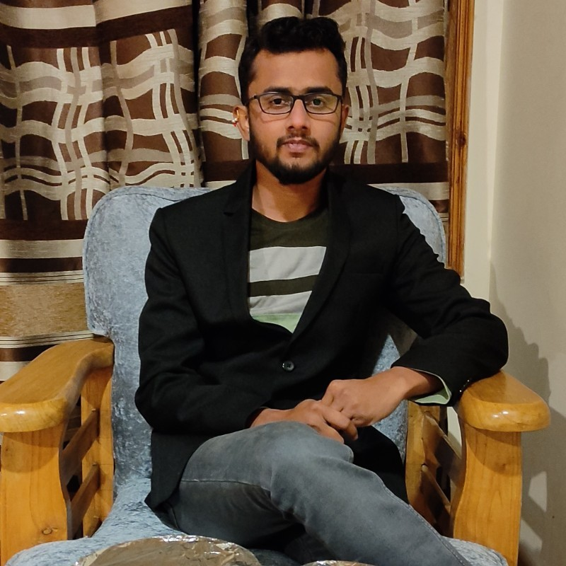
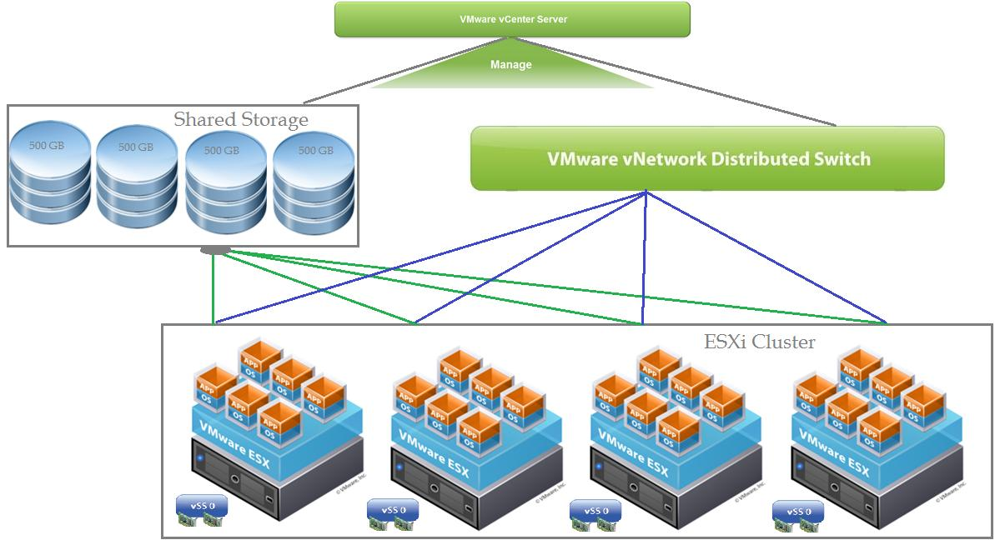
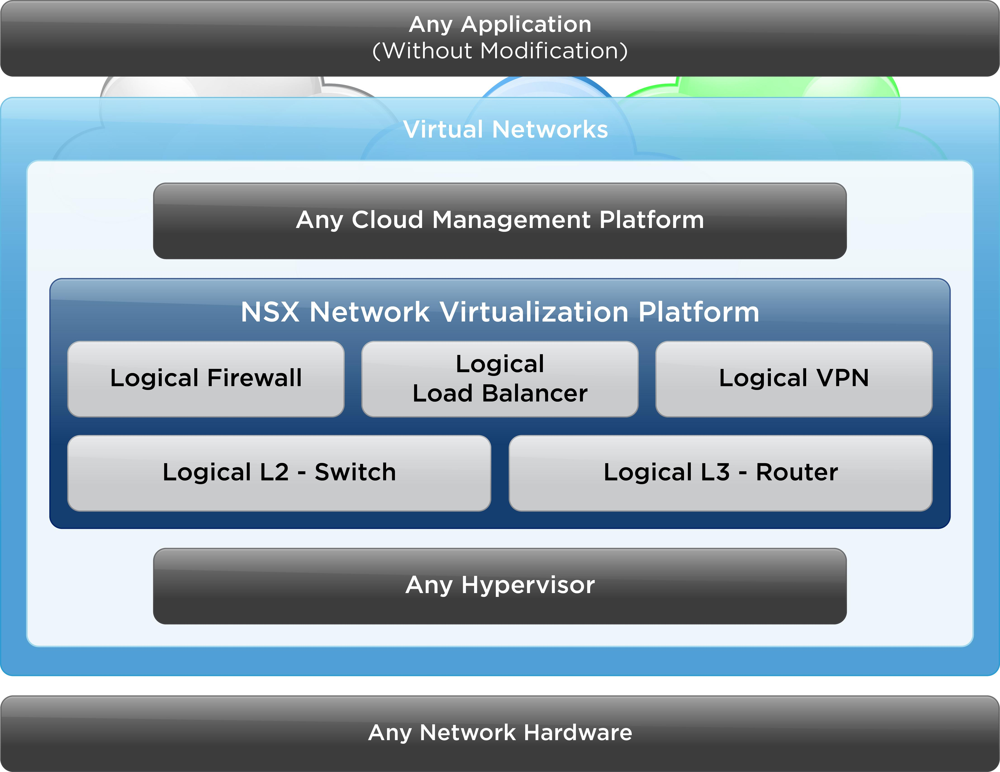

VMware Stack
- vSphere
- ESXi
- vCenter
- VCF
- HA / DRS
- Lifecycle Manager

Enterprise Virtualization | Cloud Infrastructure | OperationsVMware and cloud infrastructure specialist focused on stable, secure, and scalable datacenter platforms.
10+ Years | vSphere | ESXi | vCenter | VCF | NSX | Azure
Experienced VMware Administrator with 10+ years of hands-on expertise in virtualization, cloud infrastructure, enterprise migrations, platform upgrades, incident support, and operations. Strong background in VMware Cloud Foundation, NSX, vSphere, ESXi, vCenter, Windows Server, Azure, and ITIL-aligned service management.
Managing and supporting VMware infrastructure across production environments with focus on availability, stability, upgrades, migration support, and operational excellence.
Supported VMware NSX environments for network virtualization, segmentation, and firewall implementation activities.

Supported enterprise VM migration activities using VMware Cloud Foundation with focus on stability, dependency checks, and controlled execution.

Worked on network virtualization and firewall implementation to strengthen segmentation and improve infrastructure security posture.
Contributed to VMware stack upgrade planning and execution with focus on availability, rollback readiness, and minimal downtime.